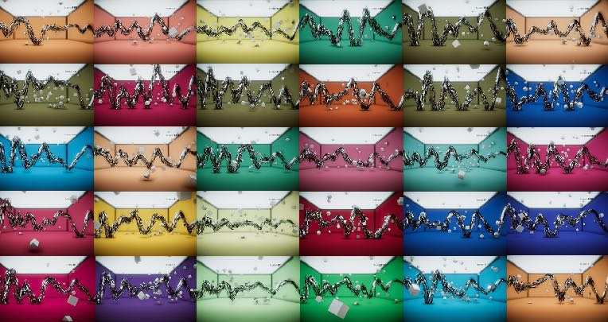

项目概述
Overview
由多个屏幕单元组成的互动墙，以波形与色彩变化将参与过程转化为可观看的图像。 A wall of multiple screen units uses waveforms and changing colours to turn participation into visible image.
项目图片
Selected Media
互动墙现场与波形图像。 The installed media wall and waveform imagery.

项目署名
Credits
- 项目参与 Contributor
- Lin Xuanzu / 林玄祖